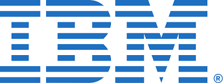

Wikipedia, the free encyclopedia
Contents |
About IBMInternational Business Machines Corporation, or simply IBM, is a major American technology company. Often nicknamed Big Blue, IBM operates in over 175 countries and has been a key player in the tech world for over a century. IBM is well-known for its innovation and influence in computing. It’s one of the largest industrial research organizations on the planet. The company has led the way in developing computer systems, hardware, software, and cloud-based services. HistoryIBM was originally founded in 1911 as the Computing-Tabulating-Recording Company (CTR). In 1924, it adopted its current name. Through the 1960s and 70s, IBM became known for creating powerful mainframe computers like the System/360. In 1981, IBM released its first personal computer. This marked the beginning of a new era and made computing accessible to homes and businesses. InnovationIBM has contributed to many major tech advancements. These include the invention of the hard disk drive, the SQL programming language, magnetic stripe cards, and dynamic RAM. Today, IBM continues to explore cutting-edge technologies like artificial intelligence, cloud computing, and quantum computing. Quick Facts
|
IBM Quick InfoIBM HQ, Armonk, NY Full Name: International Business Machines Corporation Founded: June 16, 1911 Former Name: Computing-Tabulating-Recording Company Industry: Information Technology CEO: Arvind Krishna |
IBM WIKIPEDIA PAGE.